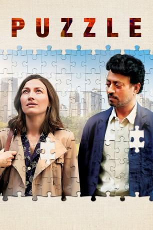
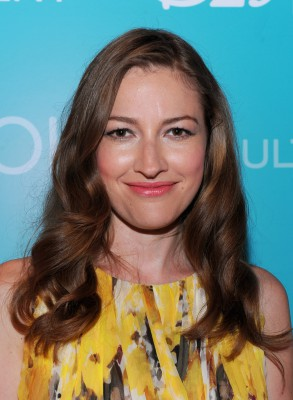
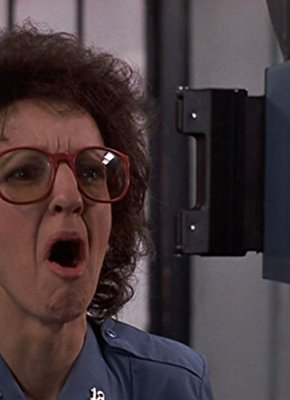

#10905 Puzzle
 
 IMDB-Wertung: 6.7 / 10
IMDB-Wertung: 6.7 / 10  Tomatometer: 83
Tomatometer: 83  Metascore: 66
Metascore: 66 
Agnes lebt in einer US-Amerikanischen Vorstadt und wird als Mutter und Ehefrau von ihrer Familie meistens einfach als gegeben hingenommen. Als sie zu ihrem Geburtstag ein Puzzle geschenkt bekommt, entdeckt sie eine ungeahnte Leidenschaft fürs Zusammensetzen der einzelnen Teile - und sie hat ein außerordentliches Talent dafür. Plötzlich entfaltet sich vor ihr eine vollkommen neue Welt.
Jahr: 2018
Dauer: 103 Minuten
FSK: 6
Land: USA Studio: SandalwoodTonspuren: DD5.1 - ,
Untertitel: Deutsch,
Auflösung: 1080p (1912x796) Größe: 4096 MB
Genre: Drama
Regisseur: Marc Turtletaub
Drehbuch: Polly Mann, Oren Moverman, Natalia Smirnoff
Soundtrack: Dustin O'Halloran
Darsteller:
-  Kelly Macdonald als Agnes
 David Denman als Louie
David Denman als Louie Daniel Stewart Sherman als Ronnie
Daniel Stewart Sherman als Ronnie- Austin Abrams als Gabe
- Bubba Weiler als Ziggy
- Helen Coxe als Ezster
- Mandela Bellamy als Grocery Clerk
- Liv Hewson als Nicki
- Lori Hammel als Fanny
- Sebastian Chacon als Puzzlemania Clerk
- Barry Godin als Father Kutash
 Irrfan Khan als Robert
Irrfan Khan als Robert- Myrna Cabello als Maria
-  Audrie Neenan als Aunt Emily
- Danny L. Chapman als Shopper (uncredited)
- Abigail Friend als Church goer (uncredited)
- Collin Grubbs als Church Goer (uncredited)
- Alison Linkov als Mom at Church (uncredited)
- Ron Maestri als Puzzle Store Manager (uncredited)
- Ruben Navarro als Louie's Bud / Mechanic (uncredited)
 Martin Pfefferkorn als Long Bearded Puzzle Competitor (uncredited)
Martin Pfefferkorn als Long Bearded Puzzle Competitor (uncredited)- Annie Pisapia als Church goer (uncredited)
- Vin Scialla als Father of Agnes (uncredited)
- Lawrence Arancio als Train Conductor
- Matthew Shifrin als Subway Singer
- Mhari Sandoval als Puzzle Competition MC
- Steven G. Lawrence als Check in Clerk (uncredited)
Datei: X:\2018(N-Z)\Puzzle (2018, FSK6, 1912x796).mkv seit 03.04.2019
Festplatte: HD 2018(G-Z)-2019(A-Z)
 Es gibt insgesamt 172 Filme in der Gruppe '2018(N-Z)'
Es gibt insgesamt 172 Filme in der Gruppe '2018(N-Z)'